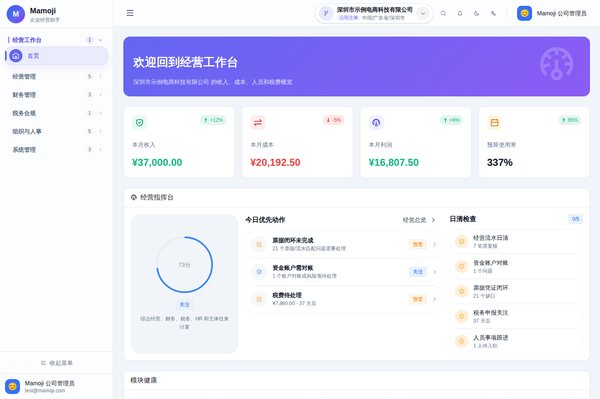
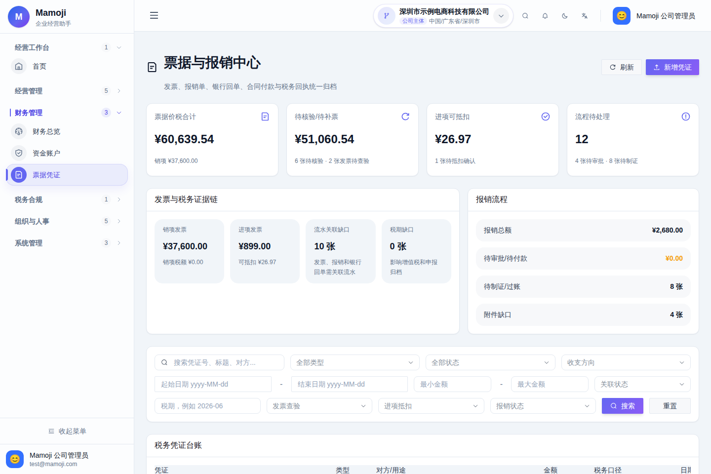
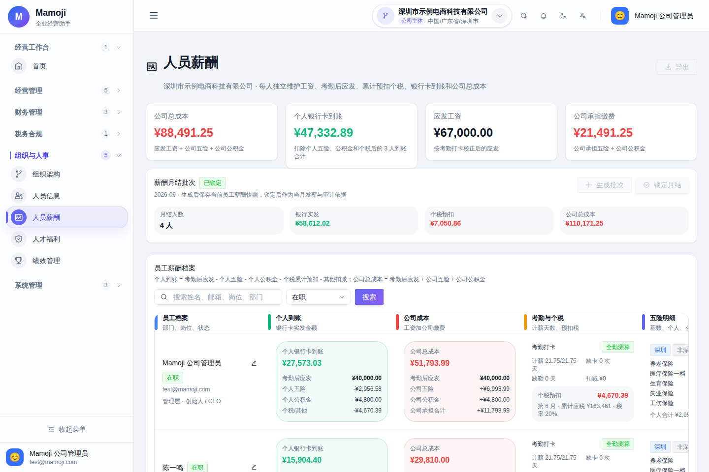

利润为正，也可能先死于现金流
订单、回款、预算承诺、审批和实际付款发生在不同时间。只记录已经发生的流水，会错过未来固定支出、待审批付款、票据缺口与账户对账异常。
Full-stack Product Case · 重点案例
一个面向小型公司的现金流运营台。它不把“记账”当终点，而是把经营流水、预算承诺、审批、付款、票据证据、资金账户与人力成本连接起来，让管理者更早看见现金压力与下一步动作。

订单、回款、预算承诺、审批和实际付款发生在不同时间。只记录已经发生的流水，会错过未来固定支出、待审批付款、票据缺口与账户对账异常。
用公司上下文与角色权限收拢数据范围，再将预算、审批、付款、证据、周期事项和人力成本串成可追踪链路；首页由后端聚合读模型回答“现在是否健康”。
截图来自当前本地版本。它们展示已经完成的信息架构与业务视图，但品牌文字仍是旧底座名称；案例不把这部分包装成已经完成。


/api/v1/workspace 统一计算收入、成本、可用现金、预算风险、待审批、票据问题、周期事项与优先动作。
按使用率计算健康、偏高、接近上限与超支等级；数据更新使用版本字段和乐观锁避免静默覆盖。
审批请求、经营流水与票据凭证能够关联；付款后的发票、合同、回单与核验状态形成审计线索。
公司成员、ActorContext、角色权限、模块开关和数据范围共同决定接口可见性；关键查询显式带 company scope。
业务动作先写 outbox_events，本地消费者生成站内通知或 Webhook，失败指数退避并最终进入 dead 状态。
Flyway、PostgreSQL、MinIO 私有 bucket、Caddy、Prometheus、生产启动 guard、版本锁定与运行手册构成交付边界。
项目、订阅、工资或采购形成收入预期与支出意图。
支出在付款前进入预算视图，系统提前暴露占用与超支风险。
申请、通过、驳回与付款记录保留公司、角色和动作边界。
合同、发票、报销单与银行回单关联到对应经营记录。
工作台更新现金、预算、对账、证据与固定成本风险。
Workspace application service 统一读取经营、资金、证据、审批与周期事项，再按访问范围输出可行动的聚合视图。
预算风险不是月底报表，而是审批与支出承诺阶段的前置反馈；超支、接近阈值与并发修改都进入明确业务状态。
当前规模不强行引入 RocketMQ；业务侧只依赖 OutboxEventService.publish(...)，未来可替换 handler 而不侵入领域动作。
项目提供 Docker Compose 本地环境、独立前后端开发路径、Flyway schema、后端测试、前端构建以及生产 Runbook / Go-live Checklist。
docker compose up -d --build mvn -f backend/pom.xml test cd frontend && npm ci && npm run build curl http://localhost:38080/actuator/health scripts/deploy-prod.sh